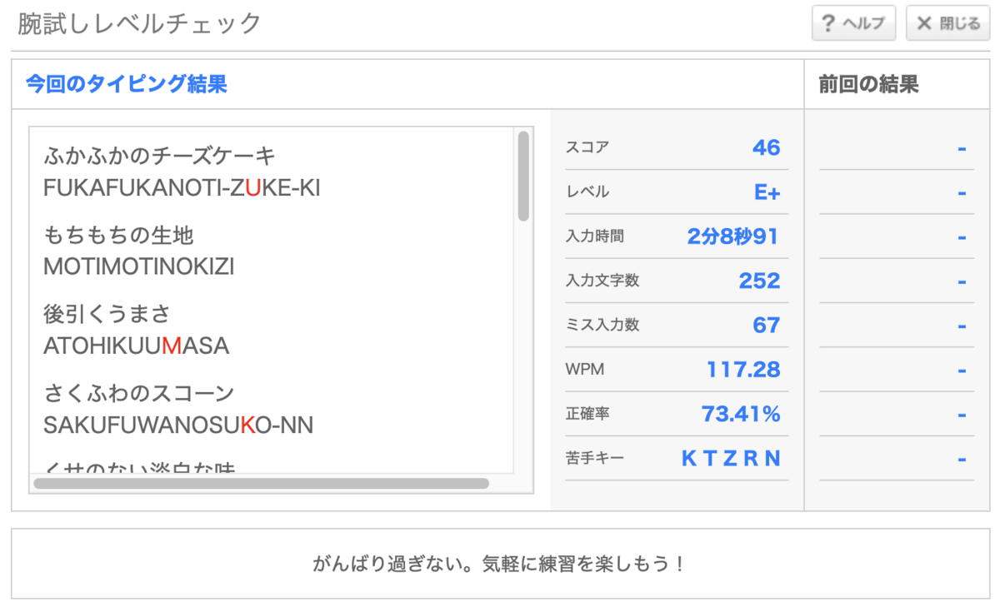

そういえば、大岡さんが書いていた記事がふと目にとまったので少し言及してみたいと思う。打鍵練習では速度指標が妙に目がつくという話。
確かにこの練習記録においても、速度記録は残していっていて、結果的に冒頭部分にスクショとともに貼ってあるので印象としては速度の成長記録に見える面もありそうな気がする。
実は自分自身はさほど速度自体には興味はないのだけど、成長記録として何らかの客観的指標、いわゆるKPIのようなものが残せたらと思って付けていっていて、それ以外の定性的な部分を補うものを文章として書き残している。
そう思うと、例えば速度ではなくて打った文章量だとか、なにか心理面を表す数値指標に置き換えていってもいいかもと思ったりする。計測の簡単さと練習の楽しさで寿司打とe-typingとタイプウェルの記録を残していっていたりするのだけど、例えばKeyboard Layout Analyzer (これとかこれとか) にあるような指標を残していくことはちょっと考えてみたい。
（ちなみに寿司打やタイプウェルについては自分は超大好きで、単純に寿司打をプレイしている時間は好きなので、もし数値指標を変えたとしても記録は残していくんじゃないかと思う。ドメインを維持したりWebGLで無料で公開し続けてくれている作者様に超感謝。）
以前も少し記事として書いたのだけれど、自分は休日の物書きを一種の瞑想としてやっている節が大きいので、書いている内容の価値を発信している時間と、打鍵に集中している時間は、実は大きく分けている。
でも記事中にも書いたように不思議と両者は共通する点が多くて、結果的に快適に長時間打てることを追求するのはあまり変わらないし、書いているものの質自体も、その時の視点はいろいろあっても結果的には時間をかけるほど向上していくし、そういう部分は不思議だなと思う。
一方で明確にいえるのは、自分は目的と手段が入れ替わることについてはかなり意図的にやっていて、歓迎している部分が多分にある。瞑想やプログラミングがそうであるように、只管打坐ではないけれど、ただ座るとかただ書くというのは自分は結構好きで、それはおそらく自分がアウトプット自体の価値で商売をすることがないからかもしれないけれど、目的と手段の入れ替わりというのは常々起きているように感じている。
ただ、前述のようにアウトプットしたものの価値を重視するときもあるので、そういうときは逆にいえばあまり手段にはこだわっていないようにも思うけれど、後から振り返ると明確にツールのこだわりが残っていたりするので、こういう無意識の部分は本当に不思議なものだと思う。
……と、だいぶ中身が脱線したけれど、自分が打鍵練習しているときは結構その打鍵している時間自体を優雅に過ごすことに比重があるかなと思っていて、たとえ打鍵自体が遅くてもゆっくりと流れる時間を楽しんだり、逆にどこをどう工夫すればさらに速く打てるようになるのかを探求することが楽しかったりする。
そう思うと、客観的な指標として速度指標を残すことは一理あるんじゃないかなと自分は思っていて、質的なものが比例するかはわからないけれど経験の蓄積と比例する部分はあるように感じているので、指標自体は今後も選びつつ、何らかの客観的数値を残していくこと自体は続けたいと思う。
（ふと思ったけど、QMKキーボード自体とかパソコンに万歩計的な打鍵数の記録を残しておいて、練習記録に付加するのは案外よさげかもしれない。でも打鍵数って残せるのかな？）